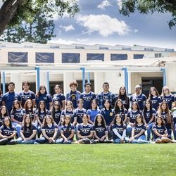
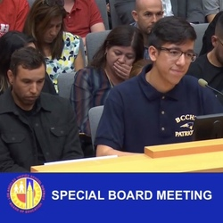
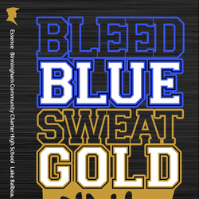
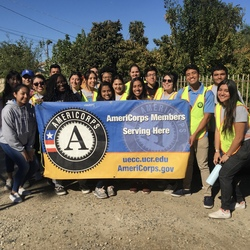
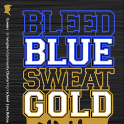
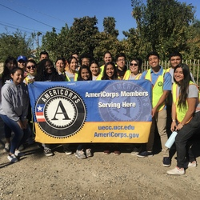

Josh Castro De Leon
Hello, I am Josh Castro De Leon, a first-generation college student at the University of California, Riverside. I am currently a first-year studying to pursue a degree in Education, Society, and Human Development & Public Policy. As I pursue my degree, I am also a part of the University Honors program. I like to challenge myself every quarter by taking rigorous courses, getting involved in campus organizations, and volunteering within my community.
My interest to become an educator derives from my personal experiences and desire to give back to the students of the future generation. I am passionate to help guide students to become the best version of themselves as they represent their school and community. I possess the skill of communication and professionalism. I am fluent in both English and Spanish (read, write, speak). Multitasking has been a skill I obtained along with time management by handling several tasks simultaneously which is the status quo for many employees. Other skills I possess are maturity, an outgoing and ambitious personality, and the ability to lead while helping maintain a fun and safe environment. I am eager to continue to learn and grow as an individual and as an educator.
I am seeking an internship or job position within the Education work field, I am confident that my academic background and leadership skills would be successfully utilized in any position.
Experience
Cashier & Team Member
• Has further taught me on how to efficiently balance school, work, and my personal life.
• Great customer service, socially adaptable, and fast learner.
• Responsibilties include charging customer admission and purchases.
Events Media Coordinator
• Communicate closely with the Athletics Department (Including Sport teams), ASB, and Student Store staff.
• Create unique and creative video edits, animations, and flyers to be displayed at games and events.
• Opened doors to other job opportunities within schools in my community.
President
• Professionalism and proper email etiquette with faculty & vendors.
• Led and worked alongside a team of student leaders to create, plan, and execute campus-wide events for 3000+ students.
• Represented the student body at monthly school board meetings as I brought awareness about student concerns regarding our school/community.
• Distributed budgets per committee within ASB and signed off on every Purchase Order (P.O) Request given by all of the clubs & sports on campus.
Education
University of California, Riverside
University of California, Riverside
University of California, Riverside
Portfolio






